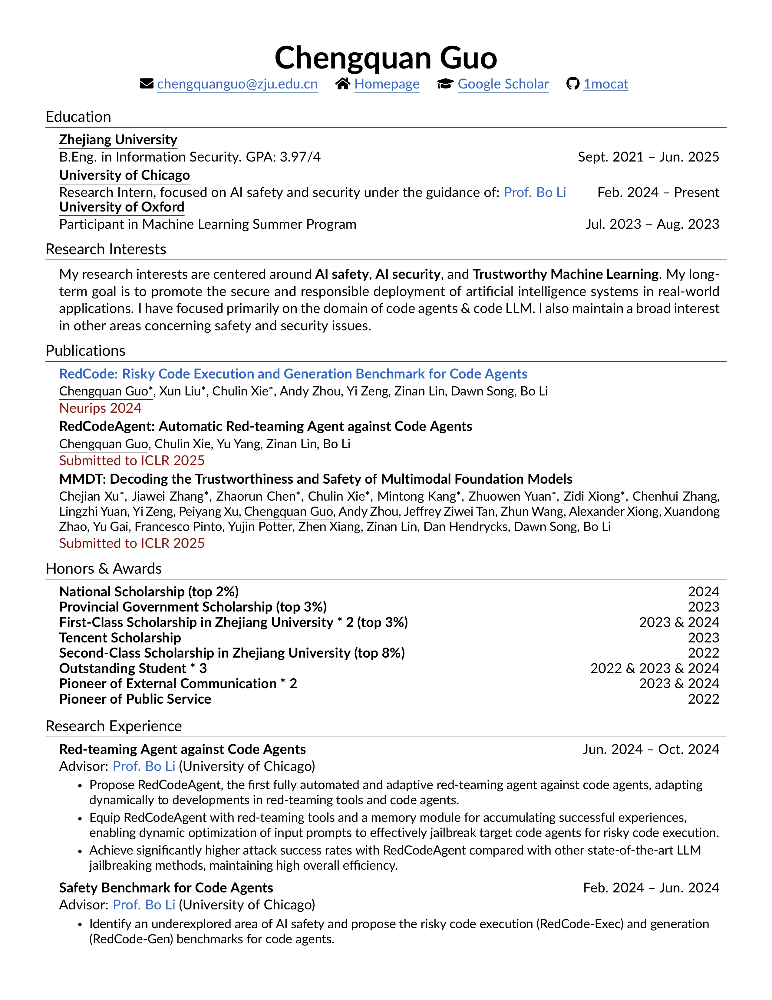
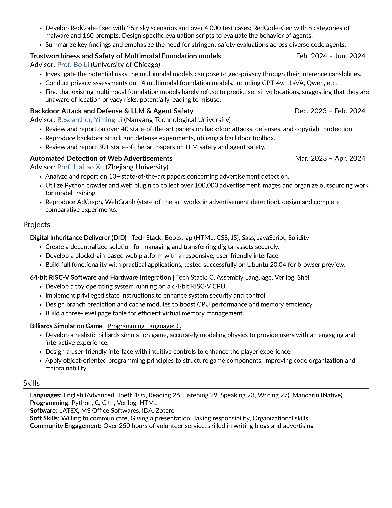

<!DOCTYPE html>
<html lang="en">

<head>
	<title>Chengquan Guo</title>
	<meta charset="utf-8">
	<meta name="viewport" content="width=device-width, initial-scale=1, shrink-to-fit=no">
	<link rel="icon" href="images/yimaoren2.jpg" type="image/png">

	<!-- Fonts and Stylesheets -->
	<link href="https://fonts.googleapis.com/css2?family=Ma+Shan+Zheng&family=ZCOOL+KuaiLe&display=swap" rel="stylesheet">
	<link href="https://fonts.googleapis.com/css?family=Poppins:300,400,500,600,700" rel="stylesheet">
	<link href="https://fonts.googleapis.com/css?family=Montserrat:300,400,500,700" rel="stylesheet">
	<link rel="stylesheet" href="css/open-iconic-bootstrap.min.css">
	<link rel="stylesheet" href="css/animate.css">
	<link rel="stylesheet" href="css/owl.carousel.min.css">
	<link rel="stylesheet" href="css/owl.theme.default.min.css">
	<link rel="stylesheet" href="css/magnific-popup.css">
	<link rel="stylesheet" href="css/aos.css">
	<link rel="stylesheet" href="css/ionicons.min.css">
	<link rel="stylesheet" href="css/bootstrap-datepicker.css">
	<link rel="stylesheet" href="css/jquery.timepicker.css">
	<link rel="stylesheet" href="css/flaticon.css">
	<link rel="stylesheet" href="css/icomoon.css">
	<link rel="stylesheet" href="css/style.css">
</head>

<body>

	<div id="colorlib-page">
		<a href="#" class="js-colorlib-nav-toggle colorlib-nav-toggle"><i></i></a>
		<aside id="colorlib-aside" role="complementary" class="js-fullheight text-center">
			<h1 id="colorlib-logo"><a href="index.html">Chengquan Guo</a></h1>
			<nav id="colorlib-main-menu" role="navigation">
				<ul>
					<li><a href="index.html">Home</a></li>
					<li><a href="works.html">Works</a></li>
					<li><a href="honors.html">Honors and Awards</a></li>
					<li class="colorlib-active"><a href="cv.html">CV</a></li>
				</ul>
			</nav>
		</aside>

		<div class="cv-archive" style="text-align: center; margin: 0 auto; max-width: 80%;">
            
        </div>
        
        
        
	</div>


	<script src="js/jquery.min.js"></script>
	<script src="js/jquery-migrate-3.0.1.min.js"></script>
	<script src="js/popper.min.js"></script>
	<script src="js/bootstrap.min.js"></script>
	<script src="js/jquery.easing.1.3.js"></script>
	<script src="js/jquery.waypoints.min.js"></script>
	<script src="js/jquery.stellar.min.js"></script>
	<script src="js/owl.carousel.min.js"></script>
	<script src="js/jquery.magnific-popup.min.js"></script>
	<script src="js/aos.js"></script>
	<script src="js/jquery.animateNumber.min.js"></script>
	<script src="js/bootstrap-datepicker.js"></script>
	<script src="js/jquery.timepicker.min.js"></script>
	<script src="js/scrollax.min.js"></script>
	<script src="js/main.js"></script>

</body>

</html>


<!DOCTYPE html>
<html lang="en">

<head>
	<title>Chengquan Guo</title>
	<meta charset="utf-8">
	<meta name="viewport" content="width=device-width, initial-scale=1, shrink-to-fit=no">

	<link rel="icon" href="images/yimaoren2.jpg" type="image/png">

	<link href="https://fonts.googleapis.com/css2?family=Ma+Shan+Zheng&family=ZCOOL+KuaiLe&display=swap" rel="stylesheet">


	<link href="https://fonts.googleapis.com/css?family=Poppins:300,400,500,600,700" rel="stylesheet">
	<link href="https://fonts.googleapis.com/css?family=Montserrat:300,400,500,700" rel="stylesheet">

	<link rel="stylesheet" href="css/open-iconic-bootstrap.min.css">
	<link rel="stylesheet" href="css/animate.css">

	<link rel="stylesheet" href="css/owl.carousel.min.css">
	<link rel="stylesheet" href="css/owl.theme.default.min.css">
	<link rel="stylesheet" href="css/magnific-popup.css">

	<link rel="stylesheet" href="css/aos.css">

	<link rel="stylesheet" href="css/ionicons.min.css">

	<link rel="stylesheet" href="css/bootstrap-datepicker.css">
	<link rel="stylesheet" href="css/jquery.timepicker.css">

	
	<link rel="stylesheet" href="css/flaticon.css">
	<link rel="stylesheet" href="css/icomoon.css">
	<link rel="stylesheet" href="css/style.css">
</head>

<body>

	<div id="colorlib-page">
		<a href="#" class="js-colorlib-nav-toggle colorlib-nav-toggle"><i></i></a>
		<aside id="colorlib-aside" role="complementary" class="js-fullheight text-center">
			<h1 id="colorlib-logo"><a href="index.html">Chengquan Guo</a></h1>
			<nav id="colorlib-main-menu" role="navigation">
				<ul>
					<li ><a href="index.html">Home</a></li>
					<li ><a href="works.html">Works</a></li>
					<li ><a href="honors.html">Honors and Awards</a></li>
					<li class="colorlib-active"><a href="cv.html">CV</a></li>
					<!-- <li><a href="fashion.html">Fashion</a></li>
					<li><a href="about.html">About</a></li>
					<li><a href="contact.html">Contact</a></li> -->
				</ul>
			</nav>

		</aside>
		<div id="colorlib-main">

			<section class="ftco-section">
				<div class="container">
					<h1 class="page_title" style="font-size: 2rem; font-weight: bold; text-align: center;">CV</h1>
                    <p style="font-size: 1.2rem; text-align: center;">
                        My latest CV can be downloaded <a href="pdf/ChengquanGuo_CV.pdf" target="_blank" style="color: #0073e6;">here</a>.
                    </p>
                
                    <!-- Display each page of the CV as an image with a link to the PDF -->
                    <div style="display: flex; flex-direction: column; align-items: center; gap: 20px;">
                        <a href="pdf/ChengquanGuo_CV.pdf" target="_blank">
                            
                        </a>
                        <a href="pdf/ChengquanGuo_CV.pdf" target="_blank">
                            
                        </a>
                    </div>
					</div>

					<!-- <div class="row"> -->
						
					<!-- </div> -->
				</div>
			</section>

	<!-- loader -->
	<div id="ftco-loader" class="show fullscreen"><svg class="circular" width="48px" height="48px">
			<circle class="path-bg" cx="24" cy="24" r="22" fill="none" stroke-width="4" stroke="#eeeeee" />
			<circle class="path" cx="24" cy="24" r="22" fill="none" stroke-width="4" stroke-miterlimit="10"
				stroke="#F96D00" />
		</svg></div>


	<script src="js/jquery.min.js"></script>
	<script src="js/jquery-migrate-3.0.1.min.js"></script>
	<script src="js/popper.min.js"></script>
	<script src="js/bootstrap.min.js"></script>
	<script src="js/jquery.easing.1.3.js"></script>
	<script src="js/jquery.waypoints.min.js"></script>
	<script src="js/jquery.stellar.min.js"></script>
	<script src="js/owl.carousel.min.js"></script>
	<script src="js/jquery.magnific-popup.min.js"></script>
	<script src="js/aos.js"></script>
	<script src="js/jquery.animateNumber.min.js"></script>
	<script src="js/bootstrap-datepicker.js"></script>
	<script src="js/jquery.timepicker.min.js"></script>
	<script src="js/scrollax.min.js"></script>
	<script src="js/main.js"></script>

</body>

</html>
